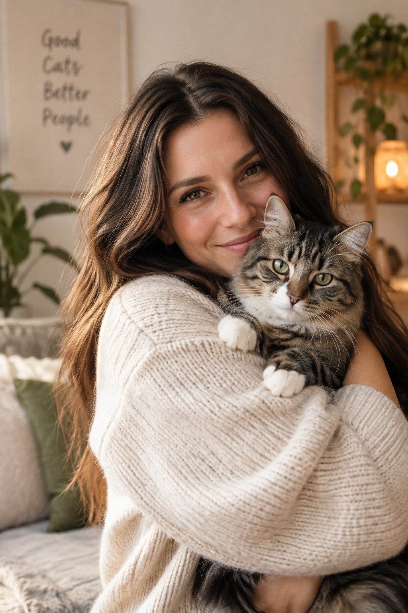
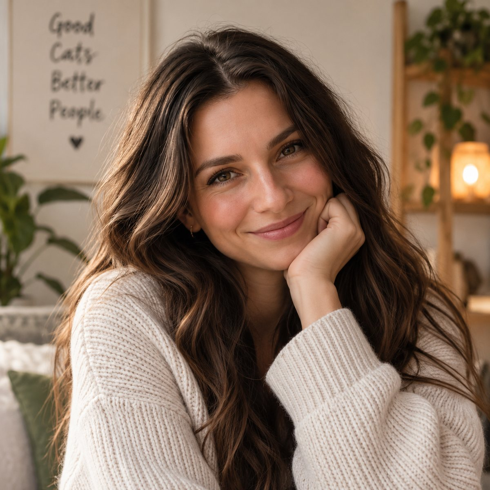
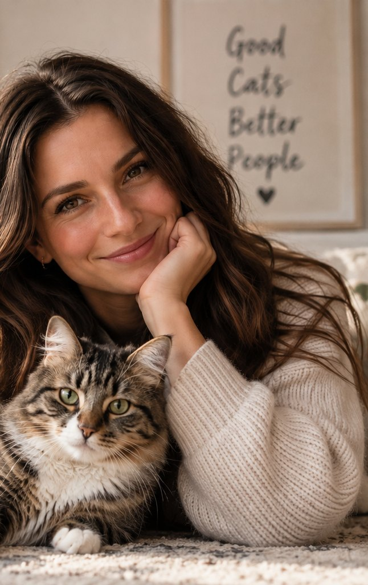
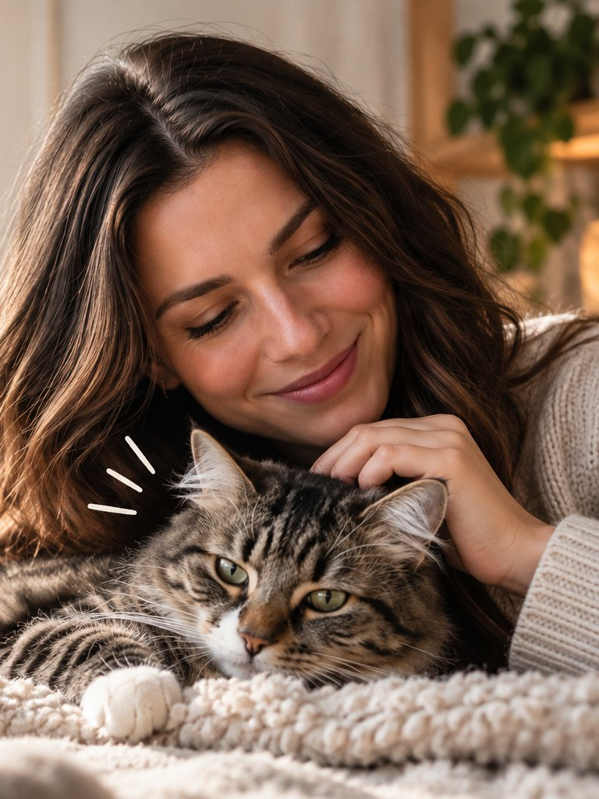
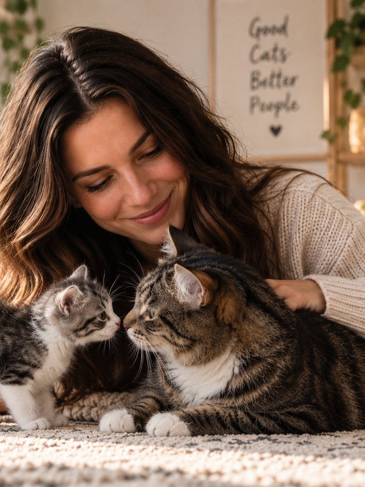

Hausbesuch
Der ausführlichste Weg. Ich sehe die Wohnung, die Ressourcen und das Verhalten im echten Umfeld – das erklärt oft schon die Hälfte.
- Anamnesebogen vorab
- 90–120 Minuten vor Ort
- Schriftlicher Maßnahmenplan
Hausbesuche in Selinas Wohnort & Onlineberatung deutschlandweit
Ich bin Selina – Katzenverhaltenstherapeutin. Ich komme zu dir nach Hause, schaue mir das Zusammenleben mit deiner Katze in Ruhe an und entwickle mit dir einen Plan, der zu euch beiden passt. Ohne Druck, ohne Schuldzuweisung.

Zwei Zuhause.
Ein Abenteuer. ♥
Wann ich helfen kann
Deine Katze macht neben das Klo, markiert oder nutzt plötzlich das Bett. Fast immer ein Signal, kein Trotz.
Fauchen, Jagen, Blockieren von Wegen. Wir sortieren Ressourcen und Rangordnung neu.
Dauerhaft unter dem Sofa, Panik bei Besuch oder beim Transport. Wir bauen Sicherheit schrittweise auf.
Kratzen und Beißen beim Spielen oder Streicheln – meist Überreizung, die sich entschärfen lässt.
Eine neue Katze zieht ein. Mit einem guten Plan von Anfang an ersparst du allen viel Stress.
Nächtliches Rufen, Dauerfressen, apathisches Schlafen. Wir passen Umgebung und Alltag an.
Nicht dabei? Schreib mir trotzdem. Im Erstgespräch klären wir kostenlos, ob eine Verhaltensberatung der richtige Weg ist – oder zuerst der Tierarzt.
Zum Ausprobieren
Eine tief geduckte, angespannte Katze mit angelegten Ohren fühlt sich unsicher. Ein entspannter, seitlich liegender Körper mit sichtbarem Bauch heißt dagegen: hier ist gerade wirklich alles gut.
Nach vorne gerichtete Ohren zeigen Interesse. Flach angelegte, seitlich gedrehte Ohren sind ein deutliches Warnsignal – Zeit, der Katze mehr Abstand zu geben.
Kneten mit den Vorderpfoten ist ein Rückfall in die Kittenzeit und meist ein Zeichen von Wohlbefinden und Vertrauen – auch wenn die Krallen dabei manchmal spürbar sind.
Ein aufrecht getragener Schwanz mit leichter Spitzenkrümmung ist ein freundlicher Gruß. Schnelles Peitschen von Seite zu Seite bedeutet: die Reizschwelle ist erreicht.
Nach vorne gerichtete Schnurrhaare signalisieren Neugier oder Jagdmodus. Eng an die Wangen gepresste Schnurrhaare zeigen Stress oder Angst.
Tipp: Katzen „sprechen“ nie nur über ein Signal – ich schaue mir im Hausbesuch immer das ganze Bild an.
Leistungen
Der ausführlichste Weg. Ich sehe die Wohnung, die Ressourcen und das Verhalten im echten Umfeld – das erklärt oft schon die Hälfte.
Per Video, deutschlandweit. Du zeigst mir per Kamera deine Wohnung, wir gehen dein Thema gemeinsam durch.
Verhalten ändert sich nicht an einem Abend. Für komplexe Fälle bleibe ich vier Wochen an deiner Seite.
15–20 Minuten am Telefon, kostenlos. Du erzählst, ich höre zu und sage dir, was möglich ist.
Du füllst einen Fragebogen aus und schickst mir Fotos oder Videos der Wohnung.
Wir beobachten, sprechen und probieren erste Dinge direkt aus.
Du bekommst deinen Maßnahmenplan schriftlich. Nach zwei Wochen melde ich mich.
Preise
kostenlos
ca. 20 Minuten, telefonisch
Kurze Einschätzung deines Themas und Empfehlung, welches Format passt.
129 €
90–120 Min. inkl. Plan
Anamnese, Termin vor Ort, schriftlicher Maßnahmenplan und eine Nachfrage-Runde.
79 €
60 Min. Videocall
Für alle, die nicht im Einsatzgebiet wohnen – oder schnell eine Einschätzung brauchen.
349 €
Paketpreis
Erstberatung, zwei Folgetermine und Rückfragen per Nachricht innerhalb von 48 Stunden.
Bei Hausbesuchen zzgl. Fahrtkosten 0,35 € pro Kilometer ab Selinas Wohnort.
Alle Preise sind Endpreise gemäß Kleinunternehmerregelung § 19 UStG.
Absagen bitte bis 24 Stunden vor dem Termin, danach berechne ich 50 %.

Über mich
Meine eigene Katze hat mich vor Jahren vor ein Rätsel gestellt, das kein Tierarztbesuch lösen konnte – erst als ich anfing, ihr Verhalten wirklich zu lesen, ergab plötzlich alles einen Sinn. Seitdem lässt mich diese Frage nicht mehr los: Was will uns diese Katze gerade sagen?
Genau das bringe ich zu dir mit: einen ruhigen, geschulten Blick auf euren Alltag – ohne Bewertung, dafür mit einem klaren, machbaren Plan, den du wirklich umsetzen kannst.
Philosophie
„Keine Katze verhält sich grundlos schwierig. Sie reagiert auf etwas, das wir noch nicht verstanden haben.“ — Selina
Ich arbeite ausschließlich mit positiver Verstärkung und Veränderungen im Umfeld. Strafen und Wasserflaschen haben in meiner Arbeit keinen Platz.
Viele Verhaltensprobleme haben eine medizinische Ursache. Ich arbeite mit deiner Tierärztin zusammen, statt an ihr vorbei.
Ein Plan hilft nur, wenn er in deinen Alltag passt. Wir suchen Lösungen, die du nach drei Tagen nicht wieder aufgibst.
Kundenstimmen
„Nach drei Wochen war das Klo wieder die erste Wahl – ich hätte nicht gedacht, dass es so schnell geht.“
„Die Zusammenführung unserer beiden Kater hätte ohne Selinas Plan nie so friedlich geklappt.“
„Zum ersten Mal hatte ich das Gefühl, dass jemand wirklich versteht, was in meiner Katze vorgeht.“
FAQ
Das hängt vom Thema ab. Bei Unsauberkeit sehen wir oft nach ein bis zwei Wochen eine Richtung, bei Angstthemen brauchen wir mehr Geduld. Ich sage dir nach der Anamnese ehrlich, was realistisch ist.
Bei plötzlicher Unsauberkeit, Aggression oder starker Veränderung: ja, bitte zuerst. Schmerzen und Erkrankungen müssen ausgeschlossen sein, bevor wir am Verhalten arbeiten.
Nein. Ich bin Verhaltenstherapeutin und stelle keine medizinischen Diagnosen und keine Medikation. Wo es sinnvoll ist, arbeite ich mit deiner Tierärztin zusammen.
Wir sprechen zuerst in Ruhe, während deine Katze sich an mich gewöhnen kann. Danach schauen wir uns gemeinsam die Wohnung an: Futter- und Wasserplätze, Klos, Rückzugsorte, Wege. Ich erkläre dir, was ich sehe, und wir legen die ersten Maßnahmen fest.
Bitte nicht. Ich möchte sehen, wie deine Katze wirklich lebt – nicht, wie es an einem Sonntagvormittag aussehen könnte. Ich bewerte dich nicht.
Selinas Wohnort und rund 40 Kilometer Umgebung. Weiter entfernt? Dann ist die Onlineberatung die bessere Wahl.
Katzenwissen

Die einfache Faustregel, mit der die meisten Unsauberkeits-Probleme gar nicht erst entstehen.

Ohren, Pfoten, Schwanz: So liest du die feinen Warnzeichen, bevor es zum Konflikt kommt.

Der Zeitplan, mit dem aus zwei fremden Katzen in Ruhe ein Team wird.
Kontakt
Schreib mir in zwei Sätzen, was gerade los ist. Ich melde mich innerhalb von 48 Stunden mit einem Terminvorschlag für das kostenlose Erstgespräch.
Freie Termine für das Erstgespräch selbst auswählen – ohne Hin und Her per Mail.
Nächste freie Termine
Angaben gemäß § 5 DDG
Selina Gauß
Seeuferstraße 14
12345 Selinas Wohnort
Kontakt: +49 176 34 56 78 90 · hallo@selina-gauss.de
Kein Ausweis der Umsatzsteuer gemäß § 19 UStG (Kleinunternehmerregelung)
Verantwortlich für den Inhalt nach § 18 Abs. 2 MStV: Selina Gauß, Adresse wie oben.
Verantwortliche Stelle im Sinne der DSGVO ist Selina Gauß (Kontaktdaten siehe Impressum). Wir verarbeiten die im Kontaktformular angegebenen Daten ausschließlich zur Bearbeitung deiner Anfrage, auf Grundlage von Art. 6 Abs. 1 lit. b DSGVO. Die Daten werden gelöscht, sobald sie für diesen Zweck nicht mehr erforderlich sind.
Verwendete Dienste auf dieser Seite: Hosting IONOS, Buchungstool (Amelia / Zeeg), Google Fonts. Mit den jeweiligen Anbietern bestehen, soweit erforderlich, Verträge zur Auftragsverarbeitung. Du hast jederzeit das Recht auf Auskunft, Berichtigung, Löschung und Einschränkung der Verarbeitung deiner Daten sowie ein Beschwerderecht bei der zuständigen Aufsichtsbehörde.